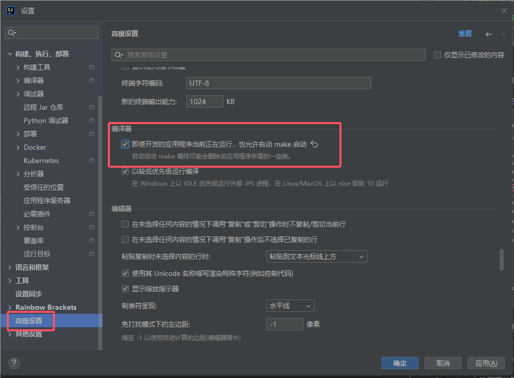

Spring Boot
Spring Boot 是由Pivotal团队提供的全新框架，其设计目的是用来简化新Spring应用的初始搭建以及开发过程。
该框架使用了特定的方式来进行配置，从而使开发人员不再需要定义样板化的配置。
通过这种方式，Spring Boot致力于在蓬勃发展的快速应用开发领域(rapid application development)成为领导者。
其特点如下：
- 创建独立的
Spring应用程序 - 嵌入的
Tomcat，无需部署WAR文件 - 简化
Maven配置 - 自动配置
Spring - 提供生产就绪型功能，如指标，健康检查和外部配置
- 没有代码生成和对
XML没有要求配置
Spring Boot约定优于配置
Spring Boot Starter、Spring Boot Jpa都是约定优于配置的一种体现。
都是通过约定优于配置的设计思路来设计的，Spring Boot Starter在启动的过程中会根据约定的信息对资源进行初始化；
Spring Boot Jpa通过约定的方式来自动生成Sql，避免大量无效代码编写。
Spring Boot初始化环境变量
- 调用
prepareEnvironment方法去设置环境变量 getOrCreateEnvironment去初始化系统环境变量configureEnvironment去初始化命令行参数environmentPrepared当广播到来的时候调用onApplicationEnvironmentPreparedEvent方法- 去使用
postProcessEnvironment方法load yml和properties变量
- 去使用
Spring Boot扫描流程
- 调用
run方法中的refreshContext方法 - 调用
AbstractApplicationContext中的refresh方法 - 委托给
invokeBeanFactoryPostProcessors去处理调用链 - 其中一个方法
postProcessBeanDefinitionRegistry会去调用processConfigBeanDefinitions解析beanDefinitions - 在
processConfigBeanDefinitions中有一个parse方法，其中有componentScanParser.parse的方法，这个方法会扫描当前路径下所有Component组件
Spring Boot配置加载顺序
使用Spring Boot会涉及到各种各样的配置，如开发、测试、线上就至少 3 套配置信息了。
Spring Boot可以轻松的帮助我们使用相同的代码就能使开发、测试、线上环境使用不同的配置。
在Spring Boot里面，可以使用以下几种方式来加载配置：
- properties文件；
- YAML文件；
- 系统环境变量；
- 命令行参数；
- ……
配置属性加载的顺序如下：
- 开发者工具
Devtools全局配置参数； - 单元测试上的
@TestPropertySource注解指定的参数； - 单元测试上的
@SpringBootTest注解指定的参数； - 命令行指定的参数，如
java -jar springboot.jar --name="HaoHaoDaYouXi"； - 命令行中的
SPRING_APPLICATION_JSONJSON指定参数, 如java -Dspring.application.json='{"name":"HaoHaoDaYouXi"}' -jar springboot.jar ServletConfig初始化参数；ServletContext初始化参数；- JNDI参数（如
java:comp/env/spring.application.json）； - Java系统参数（来源：
System.getProperties()）； - 操作系统环境变量参数；
RandomValuePropertySource随机数，仅匹配：ramdom.*；- JAR包外面的配置文件参数（
application-{profile}.properties（YAML）） - JAR包里面的配置文件参数（
application-{profile}.properties（YAML）） - JAR包外面的配置文件参数（
application.properties（YAML）） - JAR包里面的配置文件参数（
application.properties（YAML）） @Configuration配置文件上@PropertySource注解加载的参数；- 默认参数（通过
SpringApplication.setDefaultProperties指定）；
数字小的优先级越高，即数字小的会覆盖数字大的参数值
Spring Boot多套不同环境配置
application.propertiesapplication-dev.propertiesapplication-test.propertiesapplication-prod.properties
然后在application.properties文件中指定当前的环境spring.profiles.active=test,这时候读取的就是application-test.properties文件，yaml文件是同理。
Spring Boot核心配置文件
Spring Boot的核心配置文件是application和bootstrap配置文件。
application配置文件主要用于Spring Boot项目的自动化配置。bootstrap配置文件有以下几个应用场景。- 使用
Spring Cloud Config配置中心时，这时需要在bootstrap配置文件中添加连接到配置中心的配置属性来加载外部配置中心的配置信息； - 一些固定的不能被覆盖的属性；
- 一些加密/解密的场景；
- 使用
Spring Boot核心注解
启动类上面的注解是@SpringBootApplication，它也是Spring Boot的核心注解，
主要组合包含了以下3个注解：
@SpringBootConfiguration：组合了@Configuration注解，实现配置文件的功能。@EnableAutoConfiguration：打开自动配置的功能，也可以关闭某个自动配置的选项，如关闭数据源自动配置功能：@SpringBootApplication(exclude = { DataSourceAutoConfiguration.class })。@ComponentScan：Spring组件扫描。
Spring Boot实现热部署
主要有两种方式：
Spring LoadedSpring-boot-devtools
热部署的实现原理
深层原理是使用了两个ClassLoader，
一个Classloader加载那些不会改变的类（第三方Jar包），
另一个ClassLoader加载会更改的类，称为restart ClassLoader,
这样在有代码更改的时候，原来的restart ClassLoader被丢弃，
重新创建一个restart ClassLoader，由于需要加载的类相比较少，所以实现了较快的重启时间。
Spring Loaded
Spring Loaded是一个JVM的代理，用于运行时的加载类进行一个更新和修改，Spring Loaded是先运行已经改变的Class然后在适当的时候进行一个重新加载过程。
Spring Loaded允许您添加/修改/删除方法/字段/构造函数。 类型/方法/字段/构造函数上的注释也可以修改，并且可以在枚举类型中添加/删除/更改值。
Spring Loaded可用于可能在JVM上运行的任何字节码，实际上是Grails 2中使用的重新加载系统。
在Tomcat运行参数添加：-javaagent:springloaded-1.2.8.RELEASE.jar -noverify
Spring-boot-devtools
引入devtools依赖
在你的pom.xml配置文件中，引入devtools依赖包：
<dependency>
<groupId>org.springframework.boot</groupId>
<artifactId>spring-boot-devtools</artifactId>
<version>3.3.0</version>
<optional>true</optional>
</dependency>
设置optional为true，是避免父子项目依赖继承冲突。
yml文件devtools的配置
spring:
devtools:
restart:
#是否开启DevTools自动重启功能，默认为true
enabled: true
# 配置触发重启的文件路径，多个路径使用逗号分隔，默认为src/main/java,src/main/resources
additional-paths: 'src/main/java,src/main/resources'
# 配置触发重启的文件扩展名，默认为.trigger
trigger-file: '.trigger'
# 配置重启时需要排除的文件路径，多个路径使用逗号分隔，默认为META-INF/maven, META-INF/resources, resources, static, public, templates
exclude: 'WEB-INF/**,META-INF/**,resources/**,static/**,public/**,templates/**'
Intellij Idea修改
如果你是使用的idea工具开发，那你还需要改以下两个地方：
IDEA中开启自动编译的配置

2021版之后的IDEA的compiler.automake.allow.when.app.running转移了
打开 设置 -> 高级配置

2021版之前的IDEA的，打开Idea注册表Shift + Ctrl + Alt + /，找到compiler.automake.allow.when.app.running勾选配置。
Spring Boot自动配置原理
@EnableAutoConfiguration
只要使用了@EnableAutoConfiguration注解就能实现自动配置。
@Target(ElementType.TYPE)
@Retention(RetentionPolicy.RUNTIME)
@Documented
@Inherited
@AutoConfigurationPackage
@Import(AutoConfigurationImportSelector.class)
public @interface EnableAutoConfiguration {}
@Import(AutoConfigurationImportSelector.class)这个是自动配置的关键，它完成了自动配置的主要逻辑。
代码的主要片段：
@Override
public String[] selectImports(AnnotationMetadata annotationMetadata) {
if (!isEnabled(annotationMetadata)) {
return NO_IMPORTS;
}
// 获取配置的元数据
AutoConfigurationMetadata autoConfigurationMetadata = AutoConfigurationMetadataLoader.loadMetadata(this.beanClassLoader);
// 这个方法包含了加载的主要逻辑，它能找到所有自动注入的类
AutoConfigurationEntry autoConfigurationEntry = getAutoConfigurationEntry(autoConfigurationMetadata, annotationMetadata);
return StringUtils.toStringArray(autoConfigurationEntry.getConfigurations());
}
getAutoConfigurationEntry的主要逻辑：
protected AutoConfigurationEntry getAutoConfigurationEntry(AutoConfigurationMetadata autoConfigurationMetadata, AnnotationMetadata annotationMetadata) {
// ....
// 获取候选配置类
List<String> configurations = getCandidateConfigurations(annotationMetadata, attributes);
// ... 过滤、去重、排除一些配置类
return new AutoConfigurationEntry(configurations, exclusions);
}
SpringFactoriesLoader
SpringFactoriesLoader是Spring提供的一个扩展机制，它能加载模块下的META-INF/sring.factories文件，
这个Properties格式的文件中的key是接口、注解、或抽象类的全名，value是以逗号,分隔的实现类。
SpringFactoriesLoader能将相应的实现类注入Spring容器中。
查看spring-boot-autoconfigure模块下的META-INF/spring.factories文件里的Auto Configure配置
# Auto Configure
org.springframework.boot.autoconfigure.EnableAutoConfiguration=\
org.springframework.boot.autoconfigure.admin.SpringApplicationAdminJmxAutoConfiguration,\
org.springframework.boot.autoconfigure.aop.AopAutoConfiguration,\
org.springframework.boot.autoconfigure.amqp.RabbitAutoConfiguration,\
org.springframework.boot.autoconfigure.batch.BatchAutoConfiguration,\
...
可以知道它加载了哪些自动配置类
通过这个机制我们可以自己写自动配置类并且在模块下的META-INF/spring.factories文件中写入
org.springframework.boot.autoconfigure.EnableAutoConfiguration=\
com.xxx.XXXAutoConfiguration,\
...
这样直接引入我们的模块就会加载配置的XXXAutoConfiguration类